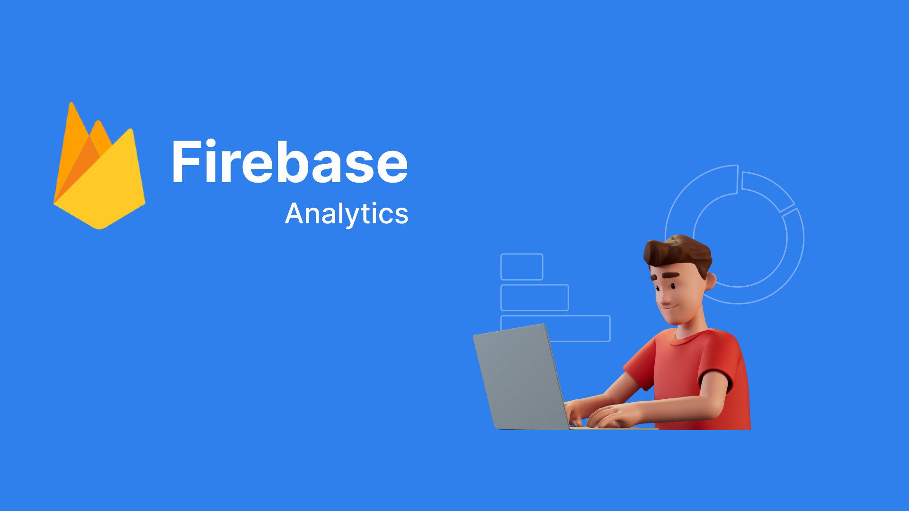

Firebase Analytics
I. Overview
Firebase Analytics is a powerful mobile analytics service provided by Firebase, Google's mobile and web app development platform. Firebase Analytics helps you gain a better understanding of how users interact with your app, enabling you to make informed decisions to improve user experience and app performance.
Key features of Firebase Analytics include:
Event Tracking:
- Firebase Analytics allows you to track important events within your app. These events can be user actions such as opening the app, clicking buttons, viewing specific screens, and much more.
User Analytics:
- It provides detailed information about users, including user source, device type, operating system, geographical location, and other attributes, giving you a comprehensive view of user demographics.
Conversion and Retention Analysis:
- Firebase Analytics helps track and analyze the user conversion process from one event to another. It also provides information about user retention after using the app for a certain period.
II. Demo
1. Integrate code with Flutter
Add lib:
- flutter pub add firebase_analytics

2. Debug view
iOS:
To run the Debug view, you need to perform additional steps.
- FIRDebugEnabled

Android:
- On the device, go to Settings -> Developer Options -> Select debug app -> Choose the app you want to debug.

- Terminal: cd /Users/mystery/Library/Android/sdk/platform-tools && ./adb shell setprop debug.firebase.analytics.app your.app.package
- Perform an action that triggers an event in Firebase Analytics and check.

At this point, the Debug Device will appear on the device, and we can check the events along with the parameters sent to Firebase Analytics.
Note: After using the Debug view, run...
./adb shell setprop debug.firebase.analytics.app none //to turn off the device
3. Debug Console with Android
Run the following commands:
Cd {path}/sdk/platform-tools
./adb shell setprop log.tag.FA VERBOSE
./adb shell setprop log.tag.FA-SVC VERBOSE
./adb logcat -v time -s FA FA-SVCWhen sending an event to Firebase Analytics, you will receive a log:

Looking at the log, we can check the name: test_debug_view along with the corresponding parameters.